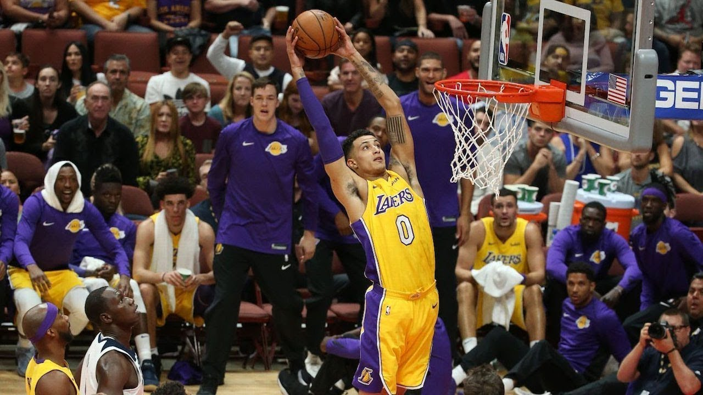
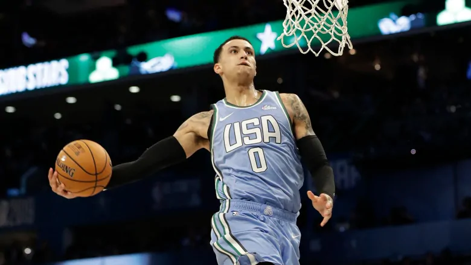

Profile Intro
Kyle Alexander Kuzma (born July 24, 1995) is an American professional basketball player for the Los Angeles Lakers of the National Basketball Association (NBA). He grew up in the Flint, Michigan area and attended the University of Utah, where he played college basketball for the Utah Utes. Kuzma was named first-team all-conference in the Pac-12 as a junior in 2016–17. He was selected with the 27th overall pick by the Brooklyn Nets in the 2017 NBA draft, but was traded to the Lakers on draft night. Following his rookie season, Kuzma was named to the NBA All-Rookie First Team.
Named the 2003–04 NBA Rookie of the Year, he soon established himself as one of the league's premier players; he won the NBA Most Valuable Player Award in 2009 and 2010. After failing to win a championship with Cleveland, James left in 2010 to sign as a free agent with the Miami Heat. This move was announced in an ESPN special titled The Decision, and is one of the most controversial free agent decisions in American sports history. James won his first two NBA championships while playing for the Miami Heat in 2012 and 2013.
Early Life
Raised in the Flint, Michigan area, Kuzma is the son of Karri Kuzma, a high school shot put champion who attended college on a track scholarship. He has a younger half-brother named Andre and a younger half-sister named Briana. Kuzma is biracial. Kuzma met his father only once as an infant, but viewed the father of his half-siblings, Larry Smith, as a father figure.Karri Kuzma and Smith put a toy basketball rim in the living room for Kyle when he was only two years old, thus igniting his passion for basketball.Kuzma has described Flint as "'a really violent place [where] there's a lot of temptation to get into the streets.'" However, Kuzma described basketball as his "'safe haven'". Kuzma attended Swartz Creek Community Schools and transferred to Bentley High School in Michigan, where he averaged 17.9 points, 14.4 rebounds, 3.8 assists and 3.4 blocks per game as a junior.Kuzma sent tapes of his shooting at the YMCA to preparatory schools; Vin Sparacio, head coach at Rise Academy in Philadelphia, "saw a 6'6", 175-pound, raw player who had a great feel for the game, and immediately brought him in." As a high school senior at Rise Academy, Kuzma averaged 22 points and seven rebounds per game.Kuzma received offers to play with Division I schools including Connecticut, Iowa State, Tennessee, and Missouri, among others, before deciding on the University of Utah.
College Career
Kuzma enrolled at the University of Utah in 2013. He redshirted his freshman year due to the fact that he signed late. He became a starter in his sophomore year, when he averaged 10.8 points per game. As a junior in 2016–17, he averaged 16.4 points, 9.3 rebounds, and 2.4 assists per game, which earned him first-team All-Pac-12 honors. After the season, Kuzma decided to enter the 2017 NBA draft, foregoing his final year of college basketball eligibility. Kuzma graduated from the University of Utah with a degree in sociology.Kuzma was selected with the 27th overall pick in the 2017 NBA draft by the Brooklyn Nets. In a draft-day trade, he was dealt along with Brook Lopez to the Los Angeles Lakers in exchange for D'Angelo Russell and Timofey Mozgov. Prior to the draft, Kuzma had been projected to go in the second round or even undrafted.On July 3, 2017, he signed his rookie scale contract with the Lakers.
Rookie season (2017–18)
During the seven out of eight games he played for the Lakers (starting in six of the games) in the 2017 NBA Summer League, Kuzma led the team in points scored and became a consistent presence during the event. He recorded averages of 21.9 points, 6.4 rebounds, 2.7 assists, 1.4 blocks, and 1.1 steals per game and was named to the All-Summer League Second Team that year. He was also named the Summer League Championship Game MVP after recording a double-double of 30 points and 10 rebounds in a 110–98 win over the Portland Trail Blazers in the championship match.On November 3, 2017, in his first game as a starter, he notched his first double-double, with 21 points and 13 rebounds, in a 124–112 win over the Brooklyn Nets. On November 17, he recorded another double-double by scoring 30 points, to go with 10 rebounds, in a 122–113 loss to the Phoenix Suns.Kuzma was named the Western Conference Rookie of the Month for games played in October/November.
2018–19 season
On October 22, 2018, Kuzma scored a season-high 37 points against the San Antonio Spurs in a 143–142 overtime loss.On January 9, 2019, he scored a career-high 41 points against the Detroit Pistons in a 113-100 win. He was selected again for the Rising Stars game, and earned MVP honors after scoring a game-high 35 points
